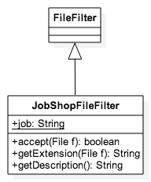

Die Klasse JobShopFileFilter

Klasse, die für das Erstellen und Verarbeiten von job-Dateien zuständig ist. Ermöglicht das Speichern der Eingabematrix automatisch als job-Datei. Im Prinzip handelt es sich dabei um eine einfache txt-Datei. Des Weiteren wird beim Laden überprüft, dass nur job-Dateien in die Anwendung geladen werden können.